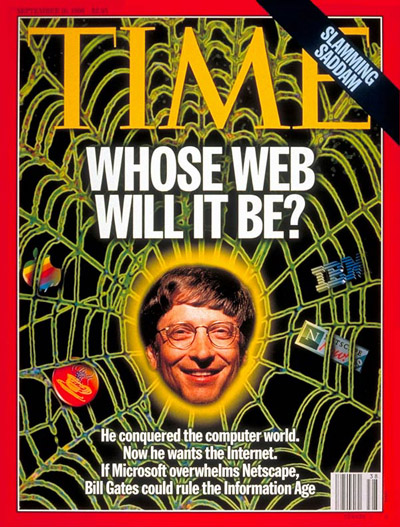
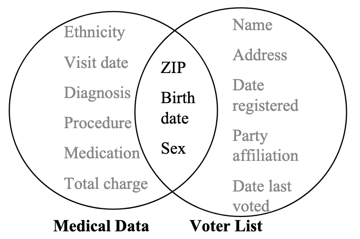

Opening. Today we're covering two of the central privacy-enhancing technologies in modern AI/ML: differential privacy and federated learning. We'll start with DP and the history that led us there, then move to federated learning in the second half.
We want to collect and analyze data to cure diseases, to train AI, to plan our cities.
But the more detailed that data is, the higher the risk of privacy harms for the data sources — i.e., people.
The field that tries to resolve this paradox is called privacy-enhancing technology.
And to understand where it is now, we have to go back to 1996.
Set up the core tension of the whole unit: the usefulness of data versus the harm that detail creates. Don't belabor specific examples — let the students connect it to things they already care about.
Transition: "The field that tries to resolve this paradox is called privacy-enhancing technology, and to understand where it is now, we have to go back to 1996."

The internet is a toddler. Anonymization means taking a black marker to the obvious fields.
Ground the students in the era. The internet is new, spreadsheets are the primary tool, and the standard approach to "anonymization" is: delete names, delete addresses, delete Social Security numbers, and you're done.
This matters because the failure we're about to see isn't a failure of the people involved — they did what everyone thought was enough. It's a failure of the *assumption* that deletion equals anonymity.
The Group Insurance Commission in Massachusetts decides (with good intentions) to release anonymized data on state employees' hospital visits — the idea was to let researchers crunch the numbers and find ways to lower healthcare costs.
| Name | Address | SSN | Ethnicity | Sex | Birth Date | ZIP | Visit Date | Diagnosis | Procedure | Medication | Charge |
|---|---|---|---|---|---|---|---|---|---|---|---|
| William F. Weld | 15 Louisburg Sq, Boston | 042-31-8876 | White | M | 1945-07-31 | 02138 | 1996-05-14 | Hypertension | Blood panel | Lisinopril | $1,840 |
| Margaret O'Shea | 88 Beacon St, Boston | 019-44-2210 | White | F | 1962-03-11 | 02116 | 1996-02-22 | Asthma | Pulmonary test | Albuterol | $620 |
| David Chen | 412 Mass Ave, Cambridge | 127-88-5501 | Asian | M | 1978-09-04 | 02139 | 1996-08-03 | Migraine | MRI | Sumatriptan | $2,410 |
| Rosa Alvarez | 27 Blue Hill Ave, Roxbury | 553-12-6049 | Hispanic | F | 1955-12-19 | 02119 | 1996-06-30 | Diabetes, Type II | A1C panel | Metformin | $980 |
| James Whitaker | 9 Elm St, Worcester | 204-76-1183 | Black | M | 1949-11-02 | 01609 | 1996-04-17 | Arthritis | X-ray, knee | Naproxen | $1,275 |
| Linda Petrov | 56 Walnut Ave, Springfield | 396-55-7720 | White | F | 1970-06-24 | 01108 | 1996-07-09 | Depression | Psych eval | Fluoxetine | $540 |
| Marcus Johnson | 301 Seaver St, Dorchester | 611-09-3354 | Black | M | 1983-01-15 | 02121 | 1996-09-28 | Fractured radius | Cast, ortho | Oxycodone | $3,120 |
| Emily Tanaka | 74 Harvard St, Brookline | 445-22-9918 | Asian | F | 1990-04-07 | 02446 | 1996-11-05 | Pneumonia | Chest X-ray | Azithromycin | $1,680 |
To anonymize the data, they deleted direct identifiers — names, addresses, Social Security numbers — of patients and called it good.
The Group Insurance Commission wanted to help researchers study healthcare costs. Their approach to anonymization was the standard of the era: delete the fields that *obviously* identify someone — name, address, SSN — and publish the rest.
Click "Remove Direct Identifiers" to show what the released version looked like. The direct-ID columns go black. Weld's portrait blurs — because now he's just another row in a sea of "anonymous" patients.
This looked safe. It wasn't. The next few slides show why.
Latanya Sweeney, a researcher at MIT, saw a problem — and decided to prove a point.
She bought the voter registration list (a public record) from Cambridge, MA for $20.
She then cross-referenced this voter list with the released medical records, found Governor Weld's personal medical records in the “de-identified” data set, and mailed them to him to demonstrate the problem.
| Name | Address | ZIP | Birth Date | Sex | Date Registered | Party | Last Voted |
|---|---|---|---|---|---|---|---|
| William F. Weld | 15 Louisburg Sq, Boston | 02138 | 1945-07-31 | M | 1968-09-12 | Republican | 1996-03-05 |
| Anne Driscoll | 210 Broadway, Cambridge | 02139 | 1952-02-18 | F | 1974-10-01 | Democrat | 1996-03-05 |
| Robert Kim | 47 Garden St, Cambridge | 02138 | 1965-11-22 | M | 1987-08-14 | Independent | 1994-11-08 |
| Sarah Goldberg | 12 Brattle St, Cambridge | 02138 | 1971-04-09 | F | 1989-06-03 | Democrat | 1996-03-05 |
| Michael O'Brien | 305 Mass Ave, Cambridge | 02139 | 1948-08-30 | M | 1970-02-19 | Democrat | 1995-11-07 |
| Priya Natarajan | 88 Prospect St, Cambridge | 02139 | 1980-06-17 | F | 1998-09-20 | Democrat | 1996-03-05 |
| Thomas Reilly | 59 Hancock St, Cambridge | 02139 | 1955-01-04 | M | 1977-11-08 | Republican | 1996-03-05 |
| Janet Williams | 22 Oxford St, Cambridge | 02138 | 1963-10-25 | F | 1984-04-15 | Independent | 1994-11-08 |
Sweeney, then an MIT researcher (now one of the world's leading privacy scholars), saw the GIC release and saw an obvious hole. She decided to make the vulnerability concrete by picking the most visible possible target: the governor.
She walked into the Cambridge city office and paid $20 for the public voter registration list. Now she had two spreadsheets. One had diagnoses. The other had names. Both had three fields in common: birth date, ZIP code, and gender.
Walk the class through the voter table on screen. Note Weld's row: 1945-07-31, male, 02138. Those three values will come back in the next two slides.
Payoff: Sweeney mailed Weld his own medical records to prove the vulnerability. This is one of the most cited demonstrations in the history of privacy research.

Cross-reference two safe-looking datasets on their shared columns — and anonymity vanishes.
The technique has a name: linkage attack. You take two datasets that each look safe on their own, find the columns they share, and use one to re-identify records in the other.
The key insight: anonymity isn't a property of a single dataset. It's a property of a dataset *in the context of everything else that's publicly known*. And in 1996, as now, an enormous amount of data is publicly known.
Click each filter in sequence. Watch the two tables converge.
| Birth Date | ZIP | Gender | Diagnosis |
|---|
| Name | Birth Date | ZIP | Gender |
|---|
Sweeney mailed the Governor his own medical records.
Walk through the filters one at a time. Let the class call out what they notice. After the first filter, we're down to 6 matches on each side. After gender, 3. After ZIP, 1.
The mathematical inevitability of that final "1" is the whole lesson. There was only ever going to be one match.
of the US population can be uniquely identified using only ZIP code, birth date, and gender. — Sweeney, 2000
Fields like these are called quasi-identifiers — data points that, while not unique alone, can be combined with other public or private information to re-identify individuals.
Data scientists realized they needed a new approach. They couldn't just delete names — they needed a mathematical guarantee of safety.
Let that number breathe. Sweeney's 2000 paper quantified what we just saw: three public fields are enough to re-identify the vast majority of Americans.
The crowd we were supposed to be hiding in — it isn't that big. Or maybe we're all much more unique than we thought.
The Romans demand the slaves identify Spartacus. One by one, every slave stands and claims, “I am Spartacus.” If everyone looks like the target, no one can be singled out.
This is k-anonymity: transform the data so that every record is indistinguishable from at least k − 1 others on its quasi-identifiers. Instead of age 32, store 30–40. Instead of ZIP 02138, store 021**. Suppress the outliers you can’t generalize.
If k = 5, every person in the release is hiding in a crowd of at least five identical-looking records. The Romans can’t pick the right one.
The first serious attempt to fix the linkage attack was k-anonymity, introduced by Sweeney herself a few years after the Weld incident.
The intuition is the Spartacus scene. If everyone in the group looks the same, the Romans can't pick out the real target.
Mechanically, k-anonymity uses two tools: generalization (turning age 32 into "30–40", turning ZIP 12345 into "123**") and suppression (deleting outliers entirely — if you're the only 104-year-old in the dataset, you get cut).
The same 20 medical records from Finding the Governor. Two tools: generalization (replace precise values with buckets) and suppression (drop rows that can't be hidden in a group of k).
| Birth Date | ZIP | Gender | Diagnosis |
|---|
Replace precise values with buckets. Exact birth date → birth decade. Full ZIP → ZIP prefix (021**). Ages become ranges. The data loses detail but each row becomes indistinguishable from others in its bucket.
Some rows can't be hidden in a group of k — they're too rare. Drop them entirely. Outliers pay the price for everyone else's anonymity.
Same 20 records students saw in the Finding the Governor demo. At k=1 it's the raw table. Click k=3 and the birth dates become 20-year buckets, ZIPs collapse to 021**, and the two records that can't find a group of 3 get suppressed.
At k=5 the buckets widen further. More rows fit into each group, but the data is even blurrier.
Emphasize the two techniques explicitly: generalization (replace with a bucket) and suppression (drop the outlier). These are the only tools k-anonymity has.
Set up the next slide: "So is this safe? Let's look at one more example and see what still leaks."
| Age | ZIP | Gender | Diagnosis |
|---|
Every male in the "30–40, 021**" group has Heart Disease.
Identifying him doesn't matter — we already know his secret.
Step through the three k values. At k=1 we see raw data. At k=3, age and ZIP are generalized but everyone is still present. At k=5, the generalization is heavier and the two outliers are suppressed.
Then hit Reveal. The homogeneity attack: the five males in the first group all have Heart Disease. The attacker doesn't need to know *which* male is the target. They know what condition he has, because everyone in his hiding group has the same condition.
k-anonymity was patched with l-diversity and t-closeness, but the bigger problem was the curse of dimensionality: in modern high-dimensional data, you'd have to suppress so much that the dataset becomes useless.
2006
Dwork, McSherry, Nissim, Smith
Stop protecting the data.
Start protecting the process.
Instead of trying to sanitize a dataset until it is “safe to release,” define a mathematical property of the release mechanism itself: the output of any query should look effectively the same whether or not any single individual is in the database.
That property is called ε-differential privacy. The parameter ε controls how much any one person can influence the answer — and therefore how much they can be leaked.
You can see the shape. You cannot see the pores.
Compute the true answer — then deliberately blur it with mathematical noise. Low ε = heavy blur = strong privacy. High ε = crisp detail = weak privacy.
Dwork, McSherry, Nissim, and Smith published the foundational paper that created the field. The key move was a change of framing: instead of trying to sanitize a dataset so it was "safe to release," they defined a mathematical property of the release mechanism itself.
Plausible deniability: the output of a query should be effectively the same whether or not you, specifically, are in the database.
The frosted-glass metaphor is the intuition that makes DP click for most people. Through frosted glass, you can see the big picture — beach vs. forest, crowd vs. empty street — but not individual faces. Use the slider to show: low epsilon = heavy blur, high epsilon = clear. Same image, same underlying data; what changes is the privacy budget.
The mechanism: compute the true answer, then add random noise drawn from a carefully chosen distribution (Laplace, for the basic case). The noise scale depends on epsilon.
Low epsilon = thick frosted glass = strong privacy, weak utility. High epsilon = thin glass = weak privacy, strong utility.
Click re-roll a few times so students see the noise is actually random. This is the key distinguishing feature from k-anonymity: there is no single "anonymized dataset" — each query draws fresh noise.
Emphasize: you cannot have perfect privacy *and* perfect accuracy. Someone has to decide where to set the dial.
Your iPhone adds noise before data ever leaves the device. Apple learns trending emoji. It never sees your keystrokes.
"Popular Times" tracks device density with noise. They know the grocery store is busy. They don't know you're in it.
For the first time, the official population count has mathematical noise baked in — to defeat reconstruction attacks.
Two banks detect money laundering together without ever sharing customer lists. The secret files talk. The humans don't see.
Four real deployments. Apple's local DP is the one students are most likely to have encountered — noise added on-device before anything is transmitted.
The 2020 Census is the most consequential. Reconstruction attacks had become feasible enough that the Bureau switched methodology entirely. We'll come back to the consequences of that decision on the next slide.
If a group has 1,000 people, adding ±5 is a rounding error.
If a group has three people...
...they can mathematically cease to exist.
This is the honest reckoning. DP isn't a free lunch. The noise doesn't affect all groups equally.
Large groups absorb the noise without trouble. Small groups — which in demographic data usually means minority communities — can be noised into oblivion. A group of 3 + a random noise draw of -4 = reported as 0.
This isn't hypothetical. The 2020 Census noise levels were controversial for exactly this reason.
Lower the epsilon and re-roll the noise a few times. The majority group (950) is untouched. The minorities (12, 7, 5, 3) collapse to zero at low epsilon, often.
Census data decides school placement, voting districts, and federal aid distribution. If the noise washes out a small community, they lose funding and political representation. The paradox: the people who most need protection from identification are also the ones most harmed by the loss of accuracy.
Researchers call the active work in this space "equitable differential privacy." It's unsolved.
Census data decides where schools get built, where voting-district lines are drawn, and where federal aid lands. If the privacy noise washes out a small community, they lose funding and political representation — even though the people are still there.
Federal law requires jurisdictions to provide ballots and voter materials in a non-English language whenever census data shows a language-minority population above a fixed threshold. If DP noise pushes those counts below the line, the trigger fails — and voters lose translated ballots entirely, disenfranchising communities the protection was designed for.
Two concrete examples of how noise in released counts becomes harm in the real world.
Funding and representation. Federal funding allocations (Title I schools, Medicaid matching, highway funds, — all tied to population counts), political boundary drawing, and where new public infrastructure gets built all run off census data. Small communities noised to zero become invisible to those processes.
Voting Rights Act Section 203. Requires bilingual ballots where a language-minority population exceeds 5% of eligible voters OR 10,000 people in a jurisdiction. The trigger depends entirely on the count being accurate. DP noise on the small end of those populations can push them below the threshold and strip the legal protection.
The memo on the link is from 2020, when the Bureau was finalizing its DP approach. Virginia's state demographer laid out concrete distortion cases and asked the governor to push back. Worth a click after class.
“For to everyone who has, more will be given… but from the one who has not, even what they have will be taken away.”
— Matthew 25:29
The model learns the majority class perfectly — its signal is strong enough to survive the noise. But it completely fails to learn the minority class. Their signal is the same order of magnitude as the noise added to protect them.
DP training mechanisms (e.g. DP-SGD) clip per-example gradients before adding noise. Rare and informative examples — the edge cases — get their influence capped. The model never hears from them.
The result: an AI system that is more biased than it would have been naturally. The model doesn't just inherit bias from the data — the privacy mechanism itself makes it worse.
If you're too unique, the algorithm literally erases you, distorting reality. The same mechanism that promises to protect you from identification also protects the model from learning you exist.
The name comes from sociology of science, ultimately from Matthew 25:29: the rich get richer, the poor get poorer. When applied to DP training, it captures the failure mode exactly.
Mechanically: DP training adds noise at each gradient step, and clips per-example gradient norms so any single example can't influence the model too much. Both moves disproportionately damage signal from rare classes and outliers.
Walk through the four cards. Land on the last one: the fairness story and the privacy story are coupled. You can't fix one without thinking about the other.
The General Data Protection Regulation sets strict rules for collection, purpose limitation, and the right to erasure. “Anonymized” data — data that can no longer be linked back to a person — falls outside its scope entirely, creating a strong incentive to really anonymize, not just redact names.
Requires that personal data be irreversibly anonymized before release or reuse — the black-marker method doesn't qualify. Penalties reach $25M CAD or 4% of global revenue. This effectively forces organizations toward techniques like differential privacy.
“We use differential privacy.”
Great. What did you set ε to?
The law says “use DP.” It usually doesn’t say what ε to use. A company can announce DP for the PR win, ship it with ε = 14 or 20, and be technically compliant while offering almost no real protection. Fancy math, safe door wide open. This is privacy theater.
Regulation is catching up. GDPR (2018) is the landmark: it creates an explicit legal category for "anonymized" data that no longer identifies anyone, and carves that category out of the regulation entirely. So there is a large compliance incentive to achieve real anonymization.
Quebec's Law 25 (2022) goes further and specifies irreversibly anonymized. Under that wording, the old delete-the-names approach doesn't meet the bar. Penalties are severe: up to CAD $25M or 4% of global revenue. Companies operating in Quebec are effectively pushed toward techniques like DP.
The catch: the law mandates the technique but usually not the parameters. A company can adopt DP in name, configure it with a huge epsilon, and be formally compliant while leaking freely. This is the privacy theater trap — the move the law was trying to block reappears in a new costume.
Pedagogical payoff: privacy-as-math-guarantee only works if someone is watching the parameter, not just the label.
Privacy is not a switch.
It's a dial.
The hand turning it balances safety, accuracy, and fairness.
We've gone from the black marker to injecting measured chaos. From redaction to perturbation. We've accepted that we have to damage the data a little to save the people in it.
The key conceptual shift: privacy isn't a binary. It's a dial that balances three things pulling against each other.
Leave them with the question: is there a point where being *too* private actually hurts? Can you be so hidden from the systems that are supposed to help you that you get left behind? That's a real tradeoff. It doesn't have a clean answer.
Transition slide into the federated learning half of the unit. Open the Google PAIR explorable live and walk through the first scroll-interactive together. Return to the deck afterward for the FL content.